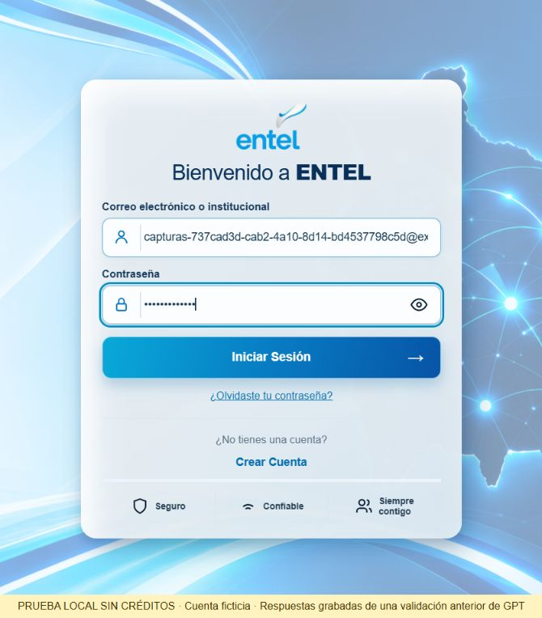
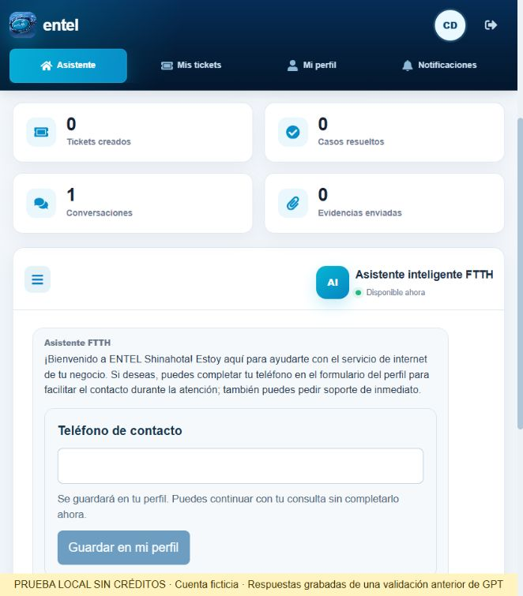
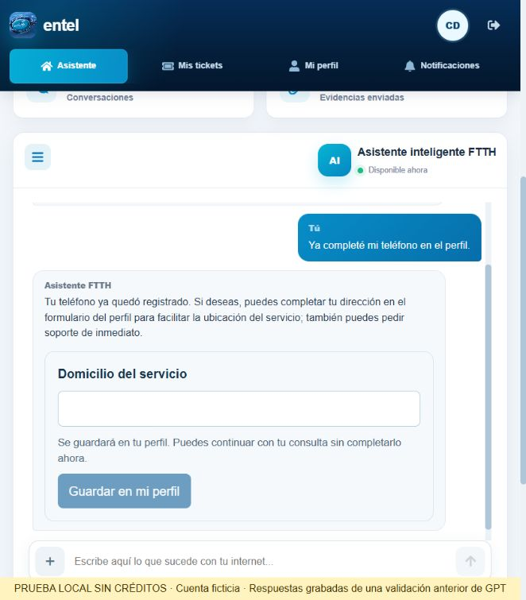
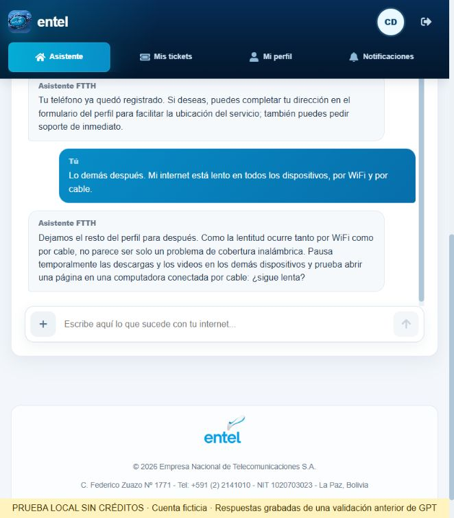
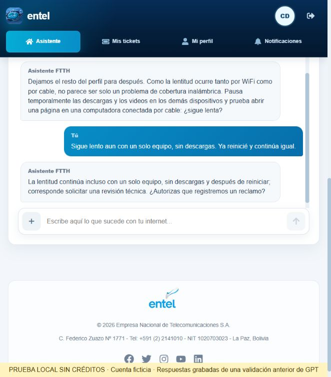
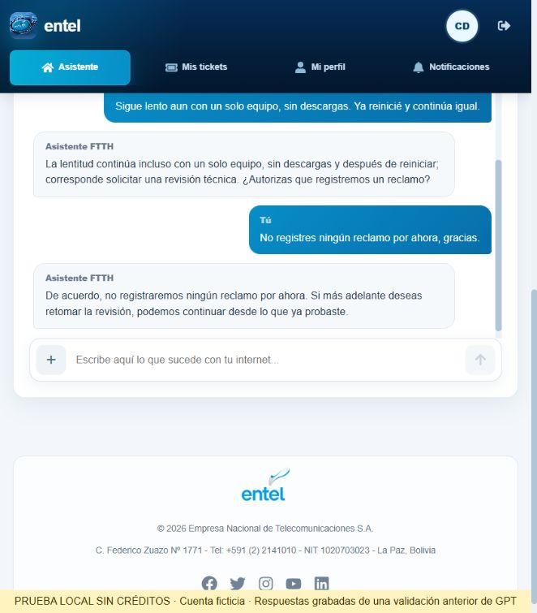
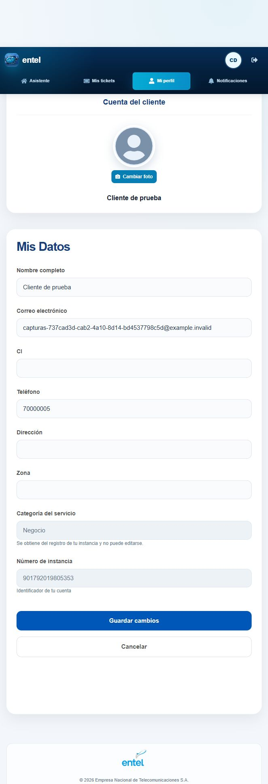

Capturas reales de la aplicación local. Cuenta ficticia. Se reprodujeron respuestas grabadas de una validación anterior de GPT: esta sesión no hizo nuevas llamadas a OpenAI ni utilizó generación de imágenes. No demuestra una nueva evaluación en vivo del modelo.






